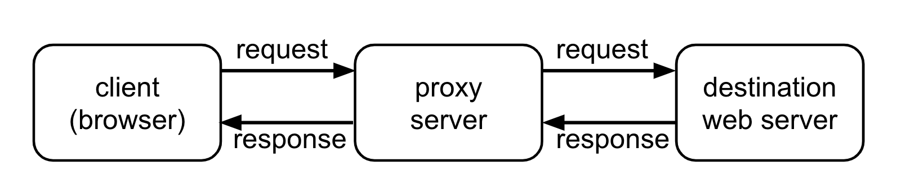
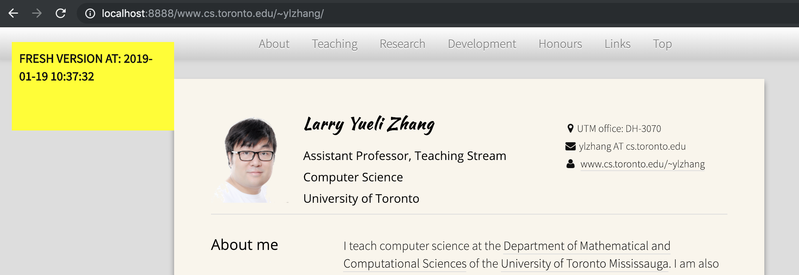
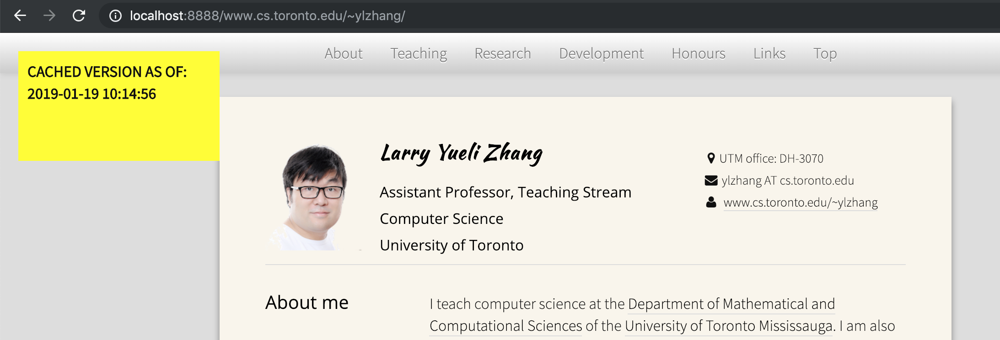

In this assignment, you will learn about proxy servers, a.k.a., web cache. Your task is to develop a small web proxy server which is able to cache web pages. It is a very simple proxy server which only understands GET-requests, but is able to handle all kinds of objects - not just HTML pages, but also images, Javascripts, etc. We will also add some unconventional features to our proxy server, such as modifying the HTTP responses being returned to the browser.
Generally, when the client (web browser) makes a request, the request is sent to the web server. The web server then processes the request and sends back a response message to the requesting client. In order to improve the performance, we create a proxy server between the client and the web server. Now, both the request message sent by the client and the response message delivered by the web server pass through the proxy server. In other words, the client requests the objects via the proxy server. The proxy server will forward the client’s request to the web server. The web server will then generate a response message and deliver it to the proxy server, which in turn sends it to the client. A proxy server can also be used to anonymize web surfing. The destination server receives requests from the proxy server, and thus does not receive information about the end user's address.

TODO: You may work on this assignment in groups of up
to 2 people. Try to find a partner (there is a "Search for Teammates!"
post on Piazza) or decide to work individually. Make sure
you can login to MarkUs. If you work in a group, create a group on
MarkUs and invite your partner.
In this assignment, you will use Python 3's socket API to implement the TCP connections used by the proxy server. To get started with Python socket programming, please review the TCP client/server examples presented at the following link:
TCP/IP Client and Server - PyMOTW-3
Below is the link to the official documentation of the Python 3 socket library:
socket - Low-level networking interface - Python 3.7.2 documentation
Once your are caught up with socket programing, you may start completing your tasks in this assignment in the following steps.
First, implement a simple TCP server (on
localhost:8888) that can receive HTTP requests sent from
the browser clients. Once an HTTP request is received, your proxy server
needs to create a new client socket that connects to the destination web
server, and forward the HTTP request there. Print out the HTTP request
and take a close look: does it need to be modified before being
forwarded to the destination?
After sending the request to the destination web server, you'll receive an HTTP response. You'll then forward this response back to the browser client so that the requested web page can be displayed in the browser. Things to observe and think about here: How many HTTP requests are issued in order to retrieve one web page? How do you tell that you have received the complete response from the destination?
Below are some URLs that you can use to test this step. Enter them in a web browser (Firefox or Google Chrome) and see whether you're getting the expected web page back.
http://localhost:8888/www.example.org (simple and small)http://localhost:8888/www.cs.toronto.edu/~ylzhang/ (with CSS and Javascript)http://localhost:8888/www.cs.toronto.edu/~arnold/ (a giant HTML to receive. Thanks, Arnold!)http://localhost:8888/www.cs.toronto.edu/~ylzhang/csc258/memes.html (one with many images)If your proxy server works correctly for the above test cases, it's a very good start!
Pro tip: Use the private (incognito) mode to visit these URLs, and close-reopen the window, to avoid the interference of browser caching.
If you haven't done so already, you now need to make your proxy
server become capable of handling multiple incoming connections at the
same time. The way to achieve this is to use the
select.select() method. Below are links to a tutorial
and the Python documentation. You'll figure it out!
How to Work with TCP Sockets in Python (with Select Example)
select - Waiting for I/O completion - Python 3.7.2 documentation
Make sure to maintain the select list properly by removing sockets from the list whenever they become inactive.
Note: There are other possible approaches to support
simultaneous connections (such as multi-threading, forking). However, in
order to meet the learning expectations of this assignment, you must use
the select-based approach.
Now let's add the cache. For each requested URL, we save their response from the destination in a file on the disk (so the cache persists when we terminate and restart the proxy server). Next time the same URL gets requests, we will load the response from the corresponding file on the disk rather than creating a connection to the destination server. You'll see that this greatly improves the page loading speed on the browser side.
Things to think about in this step: How do we name the cache files, i.e., how do convert the URLs into proper filenames? Things not to worry about: you don't need to worry about replacement policies, i.e., how to evict an item out of the cache when the cache becomes "full". We simply assume that we have enough disk space and we never need to evict any item.
Note: To make your program portable, the cache files
should be located under the current folder (where proxy.py
is). Your program should NOT rely on the existence of any folder that's
outside the current folder (e.g., /tmp).
In this step, we add a parameter that specifies how long a cached
item stays valid. This parameter is passed to the program as a command
argument, e.g., python proxy.py 120, which means that the
cached item expires 120 seconds (2 minutes) after it's created. To
implement this, you'll need to check the last-modified time of a file
(using os.path.getmtime()) and compare it with the current
time (time.time()). If the item expires, you need to fetch
it from the destination server again and update the cache
accordingly.
This is a feature that conventional proxy servers don't have: when the proxy server sends the web page back to the browser, we want to "inject" a notification box to the web page, indicating whether the displayed web page is a fresh version or a cached version. We also display the timestamp which is the current local time for a fresh copy and, for a cached copy, is the time when the item was inserted into the cache.
For example, when you visit
localhost:8888/www.cs.toronto.edu/~ylzhang/, a fresh
version of the web page would look like the following:

and a cached version would look like the following:

In order to add the notification box, you want to insert the
following segment of HTML code into somewhere in the <body>
region of the HTTP response.
<p style="z-index:9999; position:fixed; top:20px; left:20px;
width:200px; height:100px; background-color:yellow;
padding:10px; font-weight:bold;">the text</p>
You may modify the above code a little bit to make it less ugly if you'd like, but the code itself (and the length of it) should stay quite similar to the above.
Here is how you can get time string given the timestamp in Python:
time.strftime('%Y-%m-%d %H:%M:%S', time.localtime(timestamp))
This step may sound simple but there are some subtle issues that you'll need to resolve.
Issue 1: When you print out the HTTP response
received from the destination server, you may notice that the content
of the web page is unreadable binary data instead of the HTML you'd
expect. This is because the content is compressed using
gzip (check the "Content-Encoding" in the response header).
You need to get the decompressed version of the content in order to
make the modification, however, as described in the "Requirements"
section below, you're NOT allowed import the zlib library
which handles decompression. You need to come up with another solution
to this without using zlib. Hint: read Section 3.5 and Section 14.3 of RFC 2616.
Issue 2: After adding the notification box, visit
localhost:8888/wwww.example.org and look closely: compared
to the original web page at www.example.org, does your
proxy-version of the page look like truncated, i.e., not
displaying all the information that should be displayed? If so, you need
to debug it and fix it.
Once you finish this step, test the latest version of your proxy server using all the URLs listed in Step 1, and make sure they all work correctly. Then do even more testing until you're convinced that you have the perfect proxy!
Below are some specific requirements your code needs to satisfy just so that it can be properly marked by the TA.
import sys, os, time, socket, selectpython proxy.py 120http://localhost:8888/the.web.page/to/visit/localhost and the port number must be 8888
GET requests.https connections.Below is the tentative overall marking scheme of this assignment:
Coding style matters. Your code must be written in a proper style and must be well commented so that anyone else can read your code and easily understand how everything works in your code. If you don't get to complete all the steps, make a note in your code describing what has been done and what has not, and provide any information that the TA needs to know to mark your submission.
You will submit your "proxy.py" (only this one file) by
using the web submission interface of MarkUs. You can
submit the same filename multiple times and only the latest version will
be marked, so it is a good practice to submit your first version well
before the deadline and then submit a newer version to overwrite when
you make some more progress. Again, make sure your code runs as expected
on a lab computer.
Late homework submissions are penalized by 1% for every hour of lateness, rounded up, to a maximum of 24 hours. Submissions will no longer be accepted 24-hours past the deadline, except for documented unusual circumstances.
Please be reminded that ALL assignment submissions will be checked for plagiarism at the end of the term. Make sure to maintain your academic integrity carefully, and protect your own work. It is much better to take the hit on a lower assignment mark (just submit something functional, even if incomplete), than risking much worse consequences by committing an academic offence.